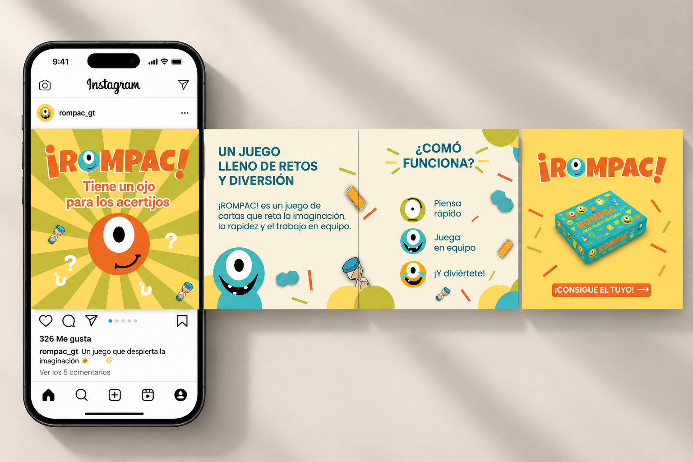

Proyectos Destacados

Brasil — Descubre nuevos destinos
Proyecto enfocado en promocionar un paquete turístico a Brasil para la agencia de viajes Salem Tours. Mediante una composición visual atractiva, fotografías de destinos emblemáticos y una jerarquía clara de información, se desarrolló un carrusel que destaca los principales atractivos del país.
Explorar detalles →
Despierta tu creatividad — Conor Papel
Proyecto enfocado en promocionar productos de papelería e inspirar la creatividad del público. Mediante una composición dinámica, colores vibrantes, fotografías y elementos gráficos, se desarrolló un carrusel que destaca el potencial creativo de los materiales.
Explorar detalles →
¡ROMPAC! — Diversión y creatividad
Proyecto enfocado en promocionar un juego de cartas que estimula la imaginación, la rapidez y el trabajo en equipo. Mediante colores vibrantes, personajes ilustrados y una composición dinámica, se desarrolló un carrusel que presenta sus características y funcionamiento.
Explorar detalles →
Tikal — Historia y naturaleza
Proyecto enfocado en promocionar Tikal como destino turístico, destacando su riqueza histórica, cultural y natural. Mediante fotografías representativas, una composición limpia y textos breves, se desarrolló un carrusel que resalta los atractivos del lugar.
Explorar detalles →